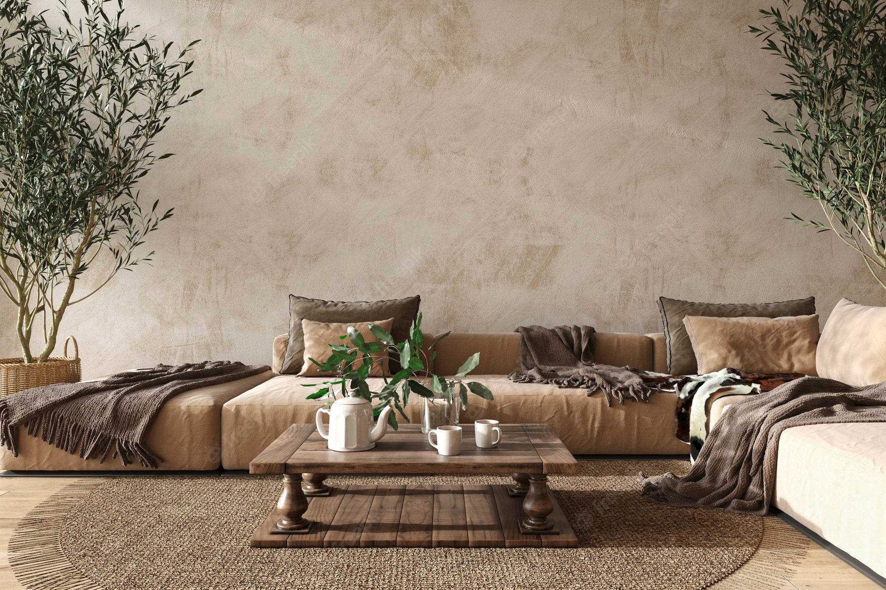
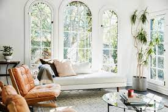
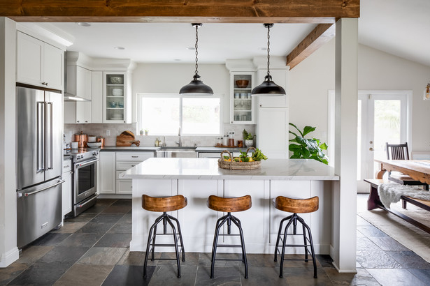

Scandinavian decor follows a “less is more” design mantra. In the 1950s and ‘60s, Scandinavian homes were traditionally small, so they didn’t allow for extravagant amounts of decorative items and accents. Thus, designers tend to avoid ornate or excessive detailing, and storage is wisely implemented.

Muted Colors
Scandinavian design often boasts a neutral-heavy color palette. Because winters are long and dark in Northern Europe, Nordic design utilizes whites, greys, and tans to make a space feel uniform and bright. Often, accents of blue and other bold colors are incorporated loosely throughout.

Natural Lighting
Natural lighting is used to make a space feel bigger and brighter. White walls emphasize available light, and minimal use of window treatments allow natural light to illuminate spaces.

Wooden Accents
Wood is often incorporated into the design of a space through walls, wood slats, and flooring. Wooden toys, like that of Danish designer Kay Bojesen’s iconic wooden monkey introduced in 1951, can also be placed around rooms as playful accents. Often, designers juxtapose the hard, dense material with rugs or sheepskin textiles to soften the feel of a space. In keeping with the light and bright aesthetic of Scandinavian design, light woods such as beech, ash, and pine are typically used most.